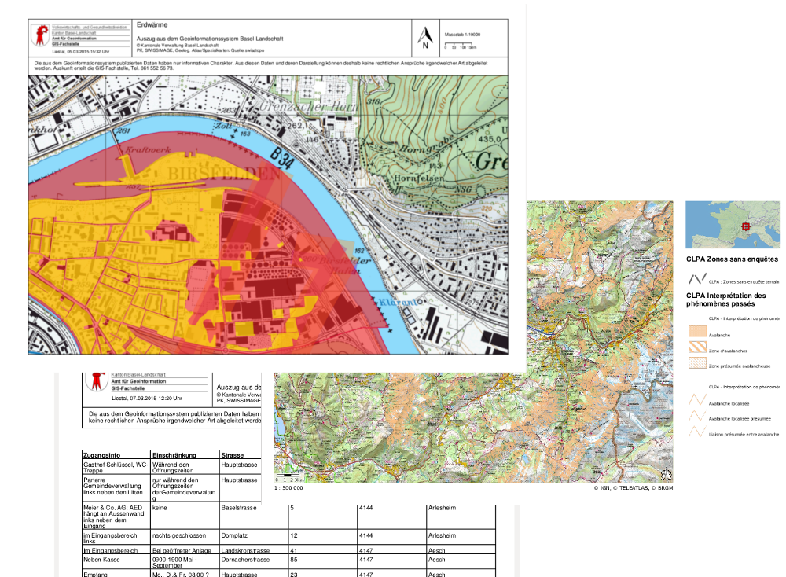
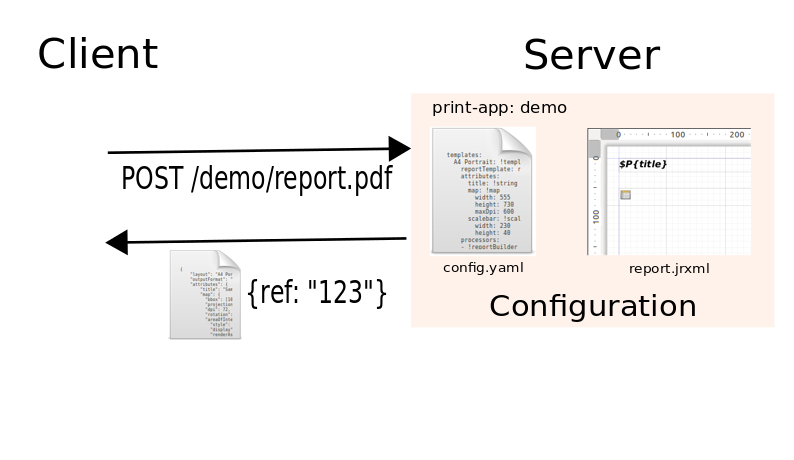
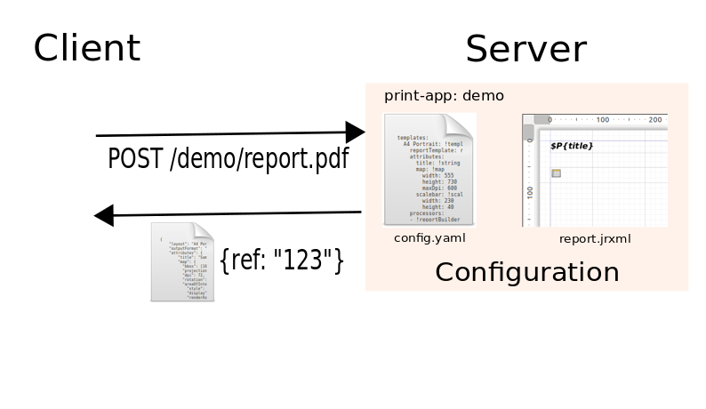

MapFish Print 3
Karten Templates und PDF
Marion Baumgartner
Über Camptocamp


Drucken / PDF Export
- Eine essentielle Anforderung in Web-maping lösungen
- Eine Liste von Ansprüchen welche zu erfüllt sind:
- gute Auflösung
- Formate A4, A3, A0, ...
- Templates und Layouts
- verschiedene Geo-daten
- ...
CSS sylesheets
Javascript im Beispiel von OLv6
WKHTMLTOPDF
Map Fish Print
- Java Bibliotheke & web applikation
- Erstelleung von PDF reports mit Katern und Komponenten

Architektur

Der Prozess
 


Configuration: config.yaml
Configuration: report.jrxml
JSON Request
Erweiterbar dir die Architektur
MapFish Print 3
MapFish Print auf GitHub:
github.com/mapfish/mapfish-print
UND
 @marionb
@marionb